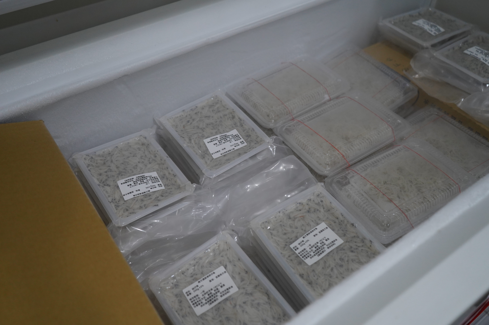
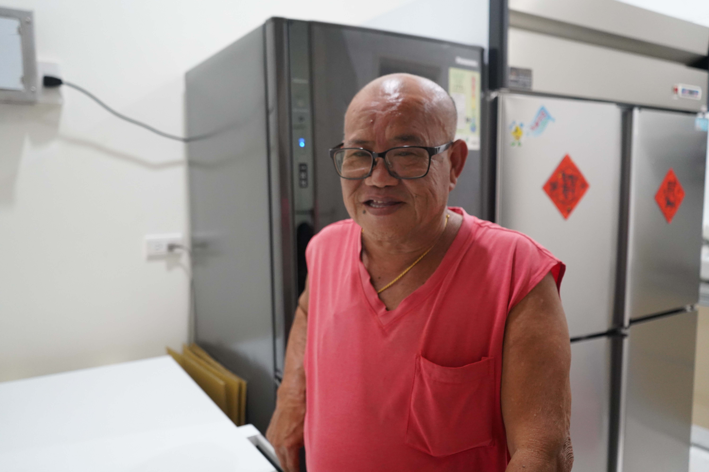

一場「十大建設」的集體大遷徙
阿濤叔原本不屬於南方澳。他對海的最初記憶，是在北邊的「北方澳」。
「我差不多國小六年級才搬過來的。」阿濤叔回憶，1970年代政府推動十大建設，其中蘇澳港的興建是重要工程之一。當時為配合港區開發與軍事需求，北方澳部分區域因港區開發與軍事需求被徵收，居民被迫遷離世代居住的家園。當時許多家庭扶老攜幼，帶著討海工具與家當，集體遷往南方澳重新開始生活，李阿濤一家也是其中之一。
對許多外地人來說，北方澳只是南方澳旁的一個地名，但對老一輩居民而言，那裡承載著共同的成長記憶。李阿濤回憶，當年幾乎是整村人一起搬遷，原本的鄰里關係與生活模式也跟著轉移到南方澳。如今南方澳漁村的發展樣貌，某種程度上也與那次遷村歷史息息相關。
追逐魚群的日子：跟著魚汛過生活
目前李阿濤主要從事近海漁業，以捕撈魩仔魚（魩鱙）為主，也會兼捕鰻苗。以前年輕時，他也曾遠赴外海抓過黑鮪魚、鬼頭刀；如今年紀長了，作息完全隨著魚種的習性而變動。
對討海人而言，時間從來不是由時鐘決定，而是由魚群決定。捕撈魩仔魚通常在凌晨進行，有時半夜兩、三點出港，有時三、四點出海，中午前後返航。鰻苗則作業完全相反，多在下午三、四點出港，頂著夜色在沿岸摸黑捕撈，通常也是當天返航。兩者的活動範圍皆沿著宜蘭海岸，包括馬賽、五結、壯圍及烏石港一帶海域。
「捕魩仔魚，一組要三艘船。」阿濤叔解釋，魩仔魚漁業的作業方式相當特殊，傳統的捕撈需要兩艘雙拖網船，再加上一艘「一體筏」（以前是竹筏，現在改為有執照的玻璃纖維一體筏）。所有船隻都必須經過登記並取得執照，相關作業紀錄也由漁會管理。
隨著科技進步，現代漁船配備魚群探測器，能協助判斷魚群位置與移動方向。不過在李阿濤眼中，儀器只是輔助工具，真正重要的仍是漁民長年累積的經驗與判斷能力。
除了捕魚方式改變，銷售模式也和過去有所不同。阿濤叔表示，以前捕撈上岸的漁獲幾乎全部交由魚市場拍賣，由盤商收購後再流向各地市場；但近年來，部分漁民也開始嘗試透過網路直接販售漁產品。
他說，目前他們會將魩仔魚分裝後透過網路販售，有生鮮產品，也有經過川燙處理的熟吻仔魚，希望能直接面對消費者，開拓更多銷售管道。從傳統拍賣市場到網路平台，漁民也正在適應新的經營方式。

禁漁令：限制也好，才不會抓不到
「出海最怕的就是沒抓到魚。」阿濤叔說，漁民的工作總與風浪為伍，一趟作業往往需要五到八個小時。如果魚群沒有出現，空船返港是常有的事。天氣則是另一項考驗，只要風浪稍大，不僅難以捕魚，網子會壞、並排作業的船隻也容易互相碰撞，危險性高就絕對不能出去。
談起漁業資源的變化，阿濤叔認為外界常有誤解。許多人認為魚群數量愈來愈少，但他覺得政府近年推動的資源管理措施其實發揮了效果。
魩仔魚漁業目前採取「總量管制」與「季節性禁捕」制度，由農業部漁業署授權地方政府管理。依規定，各縣市每年5月至9月期間必須實施連續三個月禁漁，並禁止漁船於距岸1,000公尺內（部分地區可縮減至500公尺）作業，同時限制特定網具使用，並訂定年度總容許漁獲量，希望讓魩仔魚在繁殖與成長期間獲得充分休養生息，維持海洋資源的永續利用。
宜蘭縣約在三十年前便開始實施魩鱙漁業管理制度，漁民必須持有「吻仔魚執照」才能出海作業。禁漁期則採取各港口輪流休漁的方式，避免所有漁區同時停捕。阿濤叔解釋，以南方澳為例，每年5月15日起禁捕三個月，而花蓮則從6月1日開始，「總之就是輪流的啦。」
阿濤叔坦言，身為漁民，心態難免矛盾：「政府不要限制最好，我們可以一直抓；但限制也好啦，才不會以後大家都抓不到魚。我覺得因為有控制，魚其實沒有變很少。」
然而，海裡的魚或許還在，討海的人卻愈來愈少了。在他剛開始從事漁業時，南方澳有十多組吻仔魚船隊，如今只剩下七、八組。
二十年後，南方澳會變成「外地村」嗎？
走在現在的南方澳，魚市場和漁會大樓變得比以前乾淨、現代化許多，但阿濤叔眼裡看到的，卻是繁華褪去後的落寞。
「南方澳的人口變少了。以前我讀南安國中，一個年級有八個班，一班五十幾個人；現在一個班都只剩十幾個人而已。」年輕人不想受苦，不願意再投入高風險、高勞力的漁業，老一輩的討海人則一個個凋零。「我認識的同輩很多都死掉了。」
目前阿濤叔家中擁有三艘漁船，雇了七、八名船員。談到經營，他坦言近年來經營成本不斷增加，讓不少漁民感受到重重壓力：「以前都是越南、中國的漁工，一個月一萬塊台幣左右就有；現在很多印尼的，薪水變很高，變到快不行了、太高了。現在如果年輕人自己沒有船，投入這個根本不划算。」
阿濤叔篤定地下了這個結論。當本地年輕人完全退場，為了維持這座港口的運作，勢必會引入更多來自越南、菲律賓、印尼的外國人。那些曾經擠滿碼頭的討海人、魚市場此起彼落的叫賣聲，以及一代接著一代出海的漁民家庭，正在慢慢消失。取而代之的，或許將是一座由外籍移工支撐運作的漁港。
對阿濤叔而言，這不一定是壞事，卻代表著一個時代正在結束。
如果再來一次，海洋仍是歸屬
儘管討海生活充滿風險與辛勞，李阿濤對海洋的感情始終沒有改變。「我小時候就喜歡海了，現在也是啦。」
當被問到如果人生能重新選擇一次，是否還會繼續當漁民時，他沒有猶豫太久：「可能還是會。因為我就是不愛讀書嘛！」相較於教室裡的課本，他更熟悉的是海上的浪潮與漁船的引擎聲。
從北方澳到南方澳，從少年到白髮，李阿濤的一生幾乎都在浪尖上度過。他見證了漁村最繁榮的年代，也看著人口外流與產業轉型。海上的風浪會停，漁港的樣貌也會改變，但對這位老漁民而言，那片養活一家人的海洋始終沒有變。
海，不只是工作場所，更是一生的歸屬。
